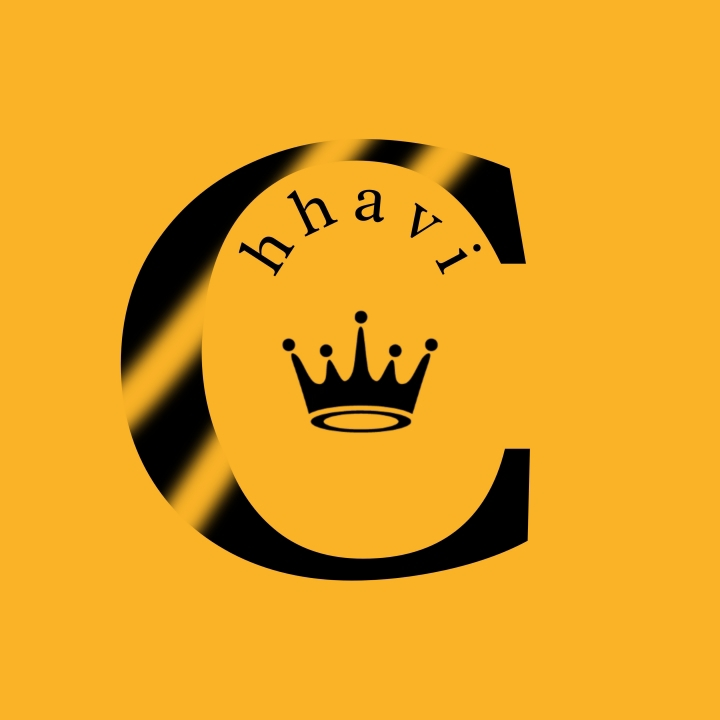

1. Logo Design — Exelon (Pentagram Project)
Role: Logo Designer / Graphic Designer
Tools Used:Adobe Photoshop, Canva, PicsArt, [other tools]
I designed a professional logo for Exelon as part of a project for a company named Pentagram. While the company later turned out to be illegitimate, this experience taught me how to interpret client requirements, brainstorm creative ideas, and deliver visually appealing designs under real-world conditions.
Image: 
2. Personal Name Logo
Role: Logo Designer / Graphic Designer
Tools Used:Adobe Photoshop, Canva, PicsArt, [other tools]
I created a personalized logo for myself, exploring typography, color schemes, and layout design. This project helped me refine my personal design style and gave me hands-on experience in developing a brand identity.
Image:

3. Cartoon Poster
Role: Graphic Designer
Tools Used:Adobe Photoshop, PicsArt, [other tools]
I designed a vibrant and playful cartoon poster purely for creative expression. This project allowed me to experiment with colors, composition, and illustration styles, showcasing my versatility and creativity as a designer.
Image: